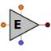

| forces_out | Forces | OUT | Output engine thrust forces port | ||
| s_Mach | PORTS_LIB.analog_signal | IN | Input mach number port (-) | ||
| s_throttle | PORTS_LIB.analog_signal | IN | Input throttle level port (-) | ||
| state_in | State | IN | Input aircraft state port |
| A | TABLE_2D | Thrust for IDLE power level (N) vs Mach (-) and altitude (m) | N | ||
| B | TABLE_2D | Thrust for MILITARY power level (N) vs Mach (-) and altitude (m) | N | ||
| C | TABLE_2D | Thrust for MAXIMUM power level (N) vs Mach (-) and altitude (m) | N | ||
| H | REAL | 225 | engine angular momentum assumed fixed at 160 slugs*ft^2/s | kg·m^2/s |
| Mach[1] | REAL | Mach number | - | ||
| Rt | REAL | Calculated inverse of the lag time constant | 1/s | ||
| Rtau | REAL | Limited inverse of the lag time constant | 1/s | ||
| altitude | REAL | Altitude | m | ||
| apow | REAL | Actual engine power level | % | ||
| cpow | REAL | Commanded engine power level | % | ||
| dpow | REAL | Required power level rate | % | ||
| throttle[1] | REAL | 0,1 | Throttle level [0,1] | - | |
| thrust | REAL | Engine thrust | N | ||
| tidl | REAL | Idle thrust | N | ||
| tmax | REAL | Maximum thrust | N | ||
| tmil | REAL | Military thrus | N |
Document generated automatically (Date: 2019:01:23, Time: 00:19:17)